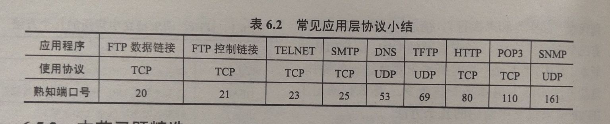

# 网络应用模型
# 客户 / 服务器模型
在 C/S 模型中，客户是服务请求方，服务器是服务提供方。网络中各计算机的地位不平等，服务器可以通过对用户权限的限制来达到管理客户机的目的，使它们不能随意存储／删除数据，或进行其他受限的网络活动。而客户机相互之间不直接进行通信，可扩展性不佳。
客户端面向用户，服务器面向任务
# C/S 模型主要应用
客户 / 服务器模型的应用：Web、文件传输协议（FTP）、远程登录和电子邮件。
# P2P 模型
# P2P 模型概述
在 P2P 模型中，各计算机没有固定的客户和服务器划分，任意一对计算机 —— 称为 ** 对等方 **(Peer)，直接相互通信。每个结点既作为客户访问其他结点的资源，也作为服务器提供资源给其他结点访问。P2P 的应用：PPlive、Bittorrent 和电驴。
# P2P 模型的优缺点
P2P 模型的优点：减轻了服务器的计算压力，消除了对某个服务器的完全依赖，提高了系统效率和资源利用率。多个客户机之间可以直接共享文档，可扩展性好，网络健壮性强，单个结点的失效不会影响其他部分的结点。
P2P 模型的缺点：占用较多的内存影响整机速度，P2P 下载会对硬盘造成较大的损伤，是网络变得非常拥堵。因此，各大 isp（互联网服务提供商，如电信网通等）通常都对 P2P 应用持反对态度。
# 域名系统（DNS）
Internet 上提供客户访问的主机不一定要有域名，多个域名可以指向同一台主机（主机有多个 IP 地址，在不同网段），一个域名可以指向多个主机（为了负载均衡）
域名系统 (DNS) 是因特网使用的命名系统， 用来把便于人们记忆的具有特定含义的主机名（如 www.cskaoya n.com) 转换为便于机器处理的 IP 地址，DNS 系统采用 客户／服务器模型，协议运行在 UDP 之上，使用 53 号端口。
# 域名规则
（1）标号中的英文不区分大小写。
（2）标号中除连字符（－）外不能使用其他的标点符号。
（3）每个标号不超过 63 个字符，多标号组成的完整域名最长不超过 255 个字符。
（4）级别最低的域名写在最左边，级别最高的顶级域名写在最右边。
# 顶级域名分类
国家顶级域名 (nTLD)：国家和某些地区的域名， 如 “.cn "表示中 国， ＂．us" 表示美国， ＂．uk" 表示英国 。
顶级域名分类 通用顶级域名 (gTLD)：常见的有 “.com” （公司）、 “.net”（网络服务机构）、 “org”（非营利性组织）和 “.gov”（国家 或政府部门）等。
基础结构域名：这种顶级域名只有一个 arpa，用于反向域名解析，因此又称反向域名。
# 域名服务器
因特网的域名系统被设计成一个联机分布式的数据库系统，并采用客户／服务器模型。
根域名服务器：是最高层次的域名服务器，所有的根域名服务器都知道所有的顶级域名服务器的 IP 地址。
顶级域名服务器：负责管理在该顶级域名服务器注册的所有二级域名，收到 DNS 查询请求时，就给出相应的回答（可能是最后的结果，也可能是下一步应当查找的域名服务器的 IP 地址）。
授权域名服务器（权限域名服务器）：每台主机都必须在授权域名服务器处登记，授权域名服务器总能将其管辖的主机名转换为该主机的 IP 地址。
本地域名服务器：当一台主机发出 DNS 查询请求时 ，这个查询请求报文 就发送给该主机的本地域名服务器，每个因特网服务提供者 (ISP)，或一所大学，甚至一 所大学中的各个系，都可以拥有一个本地域名服务器。
# 域名解析过程
域名解析就是指把域名映射成为 IP 地址或把 IP 地址映射成域名的过程。前者称为正向解析。后者称为反向解析。域名解析有两种方式递归查询和递归与迭代相结合的查询。
# 查询方式
递归查询：该方法给根域名服务造成的负载过大，所以在实际中几乎不使用。
归与迭代相结合的查询：主机向本地域名服务器的查询采用的是递归查询，本地域名服务器向根域名服务器的查询采用迭代查询。
# 域名解析过程
客户机向其本地域名服务器发出 DNS 请求报文，本地域名服务器收到请求后，查询本地缓存，若没有该记录，则以 DNS 客户的身份向根域名服务器发出解析请求，根域名服务器收到请求后，判断该域名属于域，将对应的顶级域名服务器 dns.com 的 IP 地址返回给本地域名服务器，本地域名服务器向顶级域名服务器 dns.com 发出解析请求报文，顶级域名服务器 dns.com 收到请求后，判断该域名属于 abc.com 域，因此将对应的授权域名服务器 dns.abc.com 的 IP 地址返回给本地域名服务器，本地域名服务器向授权域名服务器 dns.abc.com 发起解析请求报文，授权域名服务器 dns.abc.com 收到请求后，将查询结果返回给本地域名服务器，本地域名服务器将查询结果保存到本地缓存，同时返回给客户机。
为了提高 DNS 的查询效率，减少因特网上的 DNS 查询报文数量，在域名服务器中广泛的使用了高速缓存，但是因为主机名和 IP 地址之间的映射不是永久的，所以 DNS 服务器将在一段时间后丢弃高速缓存中的信息。
域名解析过程可能会访问多个权限域名服务器（www.abc.xyz.com，就需要访问两个权限域名服务器）
# 文件传输协议（FTP）
控制信息使外带传送的
FTP 不适合在两个计算机之间共享读写信息
# FTP 的工作原理
文件传输协议（FTP）是因特网上使用的最广泛的文件传输协议。FTP 提供交互式的访问，允许客户指明文件的类型与格式，并允许文件具有存取权限，它屏蔽了各计算机系统的细节，因而适合于在异构网络中的任意计算机之间传送文件。FTP 采用客户／服务器的工作方式，它使用 TCP 可靠的传输服务。
# FTP 功能
（1）提供不同种类主机系统（硬、软件体系等都可以不同）之间的文件传输能力。
（2）以用户权限管理的方式提供用户对远程 FTP 服务器上的文件管理能力。
（3）以匿名 FTP 的方式提供公用文件共享的能力。
# FTP 工作步骤
FTP 的服务进程由两大部分组成，一个是主进程负责接收新的请求，另外有若干从属进程负责处理单个请求。其工作步骤如下：
（1）打开熟知端口 21 （控制端口），使客户进程能够连接上。
（2）等待客户进程方连接请求。
（3）启动从属进程来处理客户进程发来的请求，进程与从属进程并发执行，从属进程对客户进程的请求处理完毕后即终止。
（4）回到等待状态，继续接收其他客户进程的请求。
# 控制连接与数据连接
FTP 在工作时使用两个并行的 TCP 连接，一个是控制连接（端口号 21），一个是数据连接（端口号为 20）。使用两个不同的端口号可以使协议更加简单和更容易实现。
# 控制连接
服务器监听 21 号端口，等待客户连接，建立在这个端口上的连接称为控制连接。控制连接（端口号 21) 控制连接用来传输控制信息（如连接请求、 传送请求等），并且控制信息都以 7 位 ASCII 格式传送。控制连接在整个会话期间一直保持打开状态。
# 数据连接
服务器端的控制进程在接收到 FTP 客户发来的文件传输请求后就创建数据传送进程和数据连接。传送完毕后关闭数据传送连接，并结束运行。
数据连接有两种传输模式：主动模式 PORT（端口号 20，服务器到客户）和被动模式 PASV（端口号随机 > 1024，客户到服务器）
# 电子邮件
# 电子邮件系统组成结构
一个电子邮件系统应具有三个最主要的组成构件：
用户代理 (UA)：用户与电子邮件系统的接口。
邮件服务器：它的功能是发送和接收邮件，同时还要向发信人报告邮件发送情况。
邮件发送协议和读取协议：邮件发送协议用于用户代理向邮件服务器发送邮件或在邮件服务器之间发送邮件。如 SMTP 协议：邮件发送协议用于用户代理向邮件服务器发送邮件或在邮件服务器之间发送邮件。POP3: 邮件读取协议用于用户代理从邮件服务器读取邮件。
# 电子邮件收发过程
发信人调用用户代理来撰写和编辑要发送的邮件。用户代理用 SMTP 把邮件传送给发送方邮件服务器。
发送方邮件服务器将邮件放入邮件缓存队列中，等待发送。
运行在发送方邮件服务器的 SMTP 客户进程，发现邮件缓存中有待发送的邮件，就向运行在接收方邮件服务器的 SMTP 服务器进程发起建立 TCP 连接。
TCP 连接建立后，SMTP 客户进程开始向远程 SMTP 服务器进程发送邮件。当所有待发送邮件发完后，SMTP 就关闭所建立的 TCP 连接。
运行在接收方邮件服务器中的 SMTP 服务器进程收到邮件后，将邮件放入收信人的用户 邮箱，等待收信人在方便时进行读取，收信人打算收信时，调用用户代理，使用 POP3（或 IMAP) 协议将自己的邮件从接收方 邮件服务器的用户邮箱中取回（如果邮箱中有来信的话）。

# 电子邮件格式与 MIME
# 电子邮件格式
to 是必需的关键字，后面填入一个或多个收件人的电子邮件地址。
Subject 是可选关键字，是邮件的主题，反映了邮件的主要内容。
From 是必填的关键字，但它通常由邮件系统自动填入。
abc@cskaoyan.com，收件人游戏名 @邮件服务器所在主机域名，在整个因特网上是唯一的
# 多用途网际邮件扩充（MIME）
SMTP 只能传送一定长度的 ASCII 码，许多其他非英语国家的文字（如中文）就无法传送无法传送可执行文件及其他二进制对象。MIME 使得可以继续使用目前的格式，增加了邮件主体的结构，并定义了传送非 ASCII 码的编码规则。
MIME 内容：
（1）5 个新的邮件首部字段，包括 MIME 版本、类型。
（2）定义了许多邮件内容的格式，对多媒体电子邮件的表示方法进行了标准化。
（3）定义了传送编码，可对任何内容格式进行转换，而不会被邮件系统改变。
# SMTP 和 POP3
# 简单邮件传输协议 (SMTP)
简单邮件传输协议 (SMTP) 是一种提供可靠且有效的电子邮件传输的协议，它控制两个相互通信的 SMTP 进程交换信息使用客户／服务器方式，发送邮件的 SMTP 进程是 SMTP 客户，而负责接收邮件的 SMTP 进程是 SMTP 服务器，SMTP 使用的是 TCP 连接，端口号为 25。
SMTP 通信分为以下三个阶段：
（1）连接建立：
发件人的邮件发送到发送方邮件服务器的邮件缓存中后，SMTP 客户就每隔一段时间对邮件缓存扫描一次。如果发现有邮件，就使用 SMTP 的熟知端口号 (25) 与接收方邮件服务器的 SMTP 服务器建立 TCP 连接，SMTP 不使用中间邮件服务器。TCP 连接总是在发送方和接收方这两个邮件服务器之间直接建立。
（2）邮件传送：连接建立后，就可开始传送邮件，邮件的传送从 MAIL 命令开始，MAIL 命令后面有发件人的地址，SMTP 服务器已准备好接收邮件，则回答 250 OK，接着 SMTP 客户端发送一个或多个 RCPT（收件人 recipient 的缩写）命令，RCPT 命令的作用 先弄清接收方系统是否己做好接收邮件的准备，然后才发送邮件，避免浪费通信资源。获得 OK 的回答后，客户端就使用 DATA 命令，表示要开始传输邮件的内容。

（3）连接释放：邮件发送完毕后，SMTP 客户应发送 QUIT 命令，SMTP 服务器返回的信息是 221（服务关闭），表示 SMTP 同意释放 TCP 连接。
简单邮件传输协议 (SMTP) 的缺点：
（1）SMTP 不能传送可执行文件或者其他二进制对象。
（2）SMTP 仅限于传送 7 位 ASCII 码，不能传送其他非英语国家的文字。
（3）SMTP 服务器会拒绝超过一定长度的邮件。
# POP3
也是基于 ASCII 码的，登录到服务器后，发送的密码不加秘
邮局协议 (POP) 是 个非常简单但功能有限的邮件读取协议，现在使用的是它的第 3 个版本 POP3，当用户读取邮件时，用 户代理向邮件服务器发出请求，拉取用户邮箱中的邮件，使用客户／服务器的工作方式，POP3 在传输层使用 TCP，端口号为 110.POP3 有两个工作方式 “下载并保留” 和 “下载并删除”。
# 因特网报文存取协议（IMAP）
IMAP 也是一个邮件接收协议，比 POP 复杂得多，它为用户提供了创建文件夹，在不同文件夹之间移动邮件及在远程文件夹中查询邮件的命令，为此 IMAP 服务器维护了会话用户的状态信息。IMAP 的另一特性是允许用户代理只获取报文的某些部分。
# 基于万维网的电子邮件
基于万维网的电子邮件的特点是：用户浏览器与 Hotmail 或 Gmail 的邮件服务器之间的邮件发送或接收使用 HTTP。在不同邮件服务器之间传送邮件时使用 SMTP。
# 万维网
万维网是一个分布式、联机式的信息存储空间。在这个空间中，有用的事物称为资源，并由一个全域 “统一资源定位符” (URL) 标识。这些资源通过超文本传输协议 (HTTP) 传送给使用者，而后者通过单击链接来获取资源。
# 万维网组成
统一资源定位符：负烹标识万维网上的各种文档，并使每个文档在整个万维网的范围内具有唯 — 的标识符 URL.
超文本传输协议 (HTTP)：— 个应用层协议，它使用 TCP 连接进行可靠的传输，HTTP 是万维 mk 网客户程序和服务器程序之间交互所必须严格遵守的协议。
超文本标记语言 (HTML)：— 种文档结构的标记语言，它使用 — 些约定的标记对页面上 的各种信息 **（包括文字、 声音、 图像、 视频等）**、 格式进行描述。
# 万维网的工作流程
Web 用户使用浏览器（指定 URL) 与 Web 服务器建立连接，并发送浏览请求 Web 服务器把 URL 转换为文件路径，并返回信息给 Web 浏览器，通信完成后关闭连接。
# 超文本传输协议（HTTP）
# 超文本传输协议概述
HTTP 定义了浏览器（万维网客户进程）怎样向万维网服务器请求万维网文档，以及服务器怎样把文档传送给浏览器。HTTP 是面向事务的应用层协议，它规定了在浏览器和服务器之间的请求和响应的格式与规则，是万维网上能够可孔地交换文件的至要基础。
# HTTP 操作过程
每个万维网站点都有一个服务器进程，它不断地监听 TCP 的端口 80（默认），当监听到连接请求后便与浏览器建立连接，TCP 连接建立后，浏览器就向服务器发送请求获取某个 Web 页面 的 HTTP 请求，服务器收到 HTTP 请求后，将构建所请求 Web 页的必需信息，并通过 HTTP 响应返回给浏览器浏览器再将信息进行解释， 然后将 Web 页显示给用户，最后释放 TCP 连接。
用户单击鼠标后发生的时间顺序：
浏览器分析链接指向页面的 URL 。浏览器向 DNS 请求解析域名的 IP 地址。域名服务器 DNS 解析出 IP 地址，浏览器与该服务器建立 TCP 连接（默认端口号为 80) 浏览器发出 HTTP 请求：GET/chn/index.html ，服务器通过 HTTP 响应把文件 index.htm 发送给浏览器 T，CP 连接释放，浏览器解释文件 index.htm，并将 Web 页显示给用户。
# HTTP 特点
（1）HTTP 是无状态的，同一个客户第二次访问同一个服务器上的页面时，服务器的响应与第一次被访问时的相同。
（2）HTTP 的无状态特性简化了服务器的设计，使服务器更容易支持大温并发的 HTTP 请求。
（3）使用 Cookie 加数据库的方式来跟踪用户的活动。
（4）HTTP 采用 TCP 作为运输层协议，保证了数据的可靠传输。
（5）HTTP 既可以使用非持久连接，也可以使用持久连接 (HTTP/1.1 支持）。
非持久连接：每个网页元素对象（如 JPEG 图形、 Flash 等）的传输都需要单独建立一个 TCP 连接
持久连接：是指万维网服务器在发送响应后仍然保持这条连接，使同一个客户和服务器可以继续在这条连接上传送后续的 HTTP 请求与响应报文。
持久连接还分为流水线和非流水线，非流水线：客户在收到前一个响应后才能发出下一个请求。流水线：客户每遇到一个对象引用 ，就立即发出一个请求。
# HTTP 报文结构
HTTP 是面向文本的，HTTP 报文分为请求报文和响应报文。请求报文：从客户向服务器发送的请求报文。响应报文：从服务器到客户的回答。

方法操作为：

# 状态码
1xx 表示通知信息的，如请求收到了或正在处理。
2xx 表示成功，如接受或知道了。
3xx 表示重定向，如要完成请求还必须采取进一步的行动。
4xx 表示客户的差错，如请求中有错误的语法或不能完成。如：404.
5xx 表示服务器的差错，如服务器失效无法完成请求
